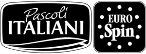

Trade Mark Journal No.2025/030 25 July 2025
WO0000001853431 (29,30,32)
Office of origin: Italy

The trademark consists of an imprint depicting a stylized box with a stylized frame with rounded corners inside which are the wordings PASCOLI ITALIANI in fancy characters arranged on two lines in which the wording ITALIANI is of larger dimensions and below said wording are two stylized partially-overlapping leaves arranged horizontally, beside all this there being another stylized box with rounded corners inside which are 12 small circles arranged in the manner of a circumference inside which are the wordings EURO SPIN in fancy characters arranged on two lines in which the wording SPIN is of larger dimensions.
- Class 29
- Ripened cheeses; fresh unripened cheeses; cheese; soft white cheese; cheese sticks; cheese spreads; blue cheese; processed cheese; cheese containing herbs; hard cheese; goat's milk cheese; mascarpone; organic milk; drinking yogurts; fruit-flavored yogurt; low-fat yogurt; cottage cheese; mozzarella sticks; soft cheese; artificial cream [dairy product substitutes]; cream [dairy products]; cheese powder; milk ferments for culinary purposes; beverages consisting primarily of milk; meat, fish, poultry and game; meat extracts; preserved, frozen, dried and cooked fruits and vegetables; jellies, jams, compotes; eggs; milk, cheese, butter, yogurt and other milk products; oils and fats for food.
- Class 30
- Bread rolls; coffee, tea, cocoa and substitutes therefor; rice, pasta and noodles; tapioca and sago; flour and preparations made from cereals; bread, pastries and confectionery; chocolate; ice cream, sorbets and other edible ices; sugar, honey, treacle; yeast, baking-powder; salt, seasonings, spices, preserved herbs; vinegar, sauces and other condiments; ice [frozen water].
- Class 32
- Protein-enriched sports beverages; energy drinks; isotonic beverages; vitamin fortified non-alcoholic beverages; beers; non-alcoholic beverages; mineral and aerated waters; fruit beverages and fruit juices; syrups and other preparations for making non-alcoholic beverages.
EUROSPIN ITALIA S.P.A.
Representative: Dr. Modiano & Associati SpA, Via Meravigli, 16, I-20123 Milano, ITALY